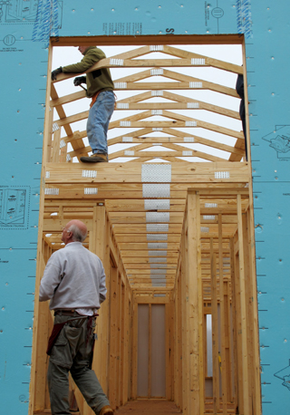

Myths and Facts
-
Myth: Habitat for Humanity gives houses away to poor people.Fact: Habitat for Humanity offers homeownership opportunities to families who are unable to obtain conventional house financing. Generally, this includes those whose income is 30 to 50 percent of the area's median income. In most cases, prospective Habitat homeowner families make a $500 down payment. Additionally, they contribute 300 to 500 hours of "sweat equity" on the construction of their home or someone else's home. Because Habitat houses are built using donations of land, material and labor, mortgage payments are kept affordable.
-
Myth: Habitat houses reduce a neighborhood’s property values.Fact: Housing studies show affordable housing has no adverse effect on neighborhood property values. In fact, Habitat houses have proven to increase property values and local government tax income.
-
Myth: Only African Americans get Habitat for Humanity homes.Fact: Habitat builds houses in partnership with those in need regardless of race, religion or any other difference. Prospective homeowners must meet three criteria: need; ability to repay the mortgage; and a willingness to partner with Habitat.

Our 9th home which was completed in June, 2013.
-
Myth: Habitat homeowners are on welfare.Fact: While some Habitat homeowners receive Aid to Families with Dependent Children, many more are working people. Typically their annual income is less than half the local median income in their community.
-
Myth: You have to be Christian to become a Habitat homeowner.Fact: Habitat homeowners are chosen without regard to race, religion or ethnic group, in keeping with U.S. law and with Habitat's abiding belief that God's love extends to everyone. Habitat also welcomes volunteers from all faiths, or no faith, who actively embrace Habitat's goal of eliminating poverty housing from the world.
-
Myth: Habitat for Humanity International dictates policy and practices for every local Habitat organization.Fact: Local Habitat affiliates are independent, nonprofit organizations that operate within a specific service area within the framework of the Habitat Affiliate Covenant.
-
Myth: Habitat for Humanity is an arm of the government.Fact: Habitat for Humanity is not an arm of the government. Habitat is an independent, nonprofit organization that accepts some government funds and other resources to help provide houses for those in need. We accept these funds as long as they do not limit our ability to demonstrate the love and teachings of Jesus Christ. Additionally, our local affiliates insert specific guidelines as needed to avoid becoming dependent on or controlled by government funds.
-
Myth: Habitat for Humanity was founded by former U.S. President Jimmy Carter.Fact: Habitat was started in 1976 in Americus, Ga., by the late Millard Fuller and his wife Linda. President Carter and his wife Rosalynn (whose home is eight miles from Americus, in Plains, Ga.), have been longtime Habitat supporters and volunteers who help bring national attention to the organization's house-building work. Each year, they lead the Jimmy Carter Work Project to help build houses and raise awareness of the need for affordable housing.